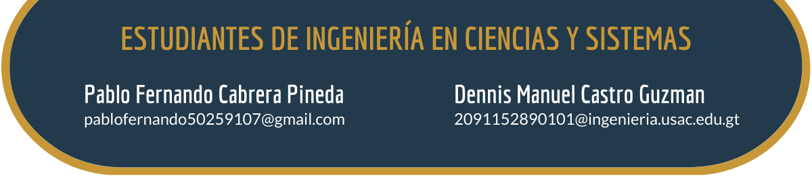

Artículo 8 El desafio del docente virtual

8.1 Introducción
El docente es una figura muy importante para una sociedad moderna, cuyo objetivo primordial es el de formar compañeros profesionales de sectores de todas las índoles. Una de las responsabilidades de cada docente (entre muchas otras), es la de mantenerse actualizado en relación a su área de estudio y los grandes avances que puede presentar con el tiempo. Es por esto que de forma sistemática se realiza una actualización continua de docentes, para integrar los conocimientos recientes y preservar la calidad educativa.
La pandemia de COVID-19 evidenció que el sistema de actualización docente actual se queda atrás ante un mundo que avanza a pasos agigantados, que no da la prioridad suficiente al aprendizaje de temas que van más allá de lo académico, como lo son el uso de nuevas tecnologías que apoyen la docencia y la aplicación de métodos que faciliten el aprendizaje del estudiante remoto.
La labor de los docentes hoy en día se ha vuelto más que nunca fundamental para que los estudiantes aprendan y logren sobreponerse a cualquier obstáculo que les impida aprender, esto debido a la pandemia que estamos viviendo. Muchos docentes estaban acostumbrados a un sistema convencional de dar clases, incluso algunos sin saber mucho de tecnología, ahora mismo se ven obligados más que nunca a aprender otras técnicas muy útiles al impartir lecciones. Se podría decir que antes era de suma importancia la actualización continua del docente, pero ahora es más que obligatorio.
La formación continua juega un papel muy importante, ya que cada vez más la sociedad demanda una educación de calidad. Es sabido que la formación continua en el ámbito educativo ya sea que se tenga experiencia laboral o no, siempre es una buena opción para mantenerse actualizado como trabajador y mejorar nuestras competencias; Partiendo de esto y sabiendo que los docentes tienen en sus manos la misión de formar a la sociedad del futuro es necesario tener esta constante actualización de conocimiento, acá podemos ver tres razones por las cuales los docentes en la actualidad se ven obligados a una actualización.
- Los cambios en la tecnología
- La evolución de los métodos educativos
- La disminución del índice de rotación de personal
Estas son unas de las principales razones, el desafío que se tiene como docente va aumentando debido a que estamos viviendo en unos tiempos y sociedad muy cambiante no solo generacional también lo vemos en la tecnología, vemos como las situaciones que vivimos en algunas ocasiones nos hacen replantearnos en la forma que realizamos las cosas en este caso la educación nos está afectando a todos, más a los que tienen que hacer partes prácticas y que en algunas ocasiones son muy críticas o delicadas.
De forma más específica, algunos de los nuevos retos a los que los docentes se han visto expuestos son la falta de un método de enseñanza en espacios virtuales que permita tanta expresividad como un pizarrón, la dificultad de mantener la atención del estudiante, la naturaleza inestable de la comunicación virtual con la totalidad del alumnado, la traslación de evaluaciones al terreno virtual, entre otros.
Las plataformas digitales también son algo bueno para la educación, pues permiten almacenar las lecciones impartidas para la futura consulta del estudiante, facilitan la publicación del material auxiliar para el pre y el post de las clases, proveen una o varias vías de comunicación con el docente. Sin embargo, estas plataformas tan poderosas requieren una capacitación que no es impartida y se deja en manos del docente aprender a utilizarlas y aprovecharlas en su totalidad. Por supuesto ha habido docentes que a pesar del cambio repentino se han podido adecuar, todos hemos tenido un docente que aprovecha el espacio digital para enriquecer e impartir de forma excelsa su lección, pues no todo son malas noticias al hablar de clases virtuales. Las clases virtuales como muchas otras actividades también se han beneficiado de su aplicación a distancia, en tanto que no es necesario una presencialidad, una gran noticia para docentes y alumnos que se encuentran lejos del centro educativo.
Debido a esto se debe invertir desde ya en incentivar al docente a que se capacite constantemente apoyándolo en todas las áreas necesarias, dándole todas las herramientas necesarias y orientando a los que no saben por dónde comenzar, ya que en los distintos niveles de educación existen herramientas específicas para impartir las clases. No sabemos hasta cuando durará esta situación que estamos viviendo actualmente, pero nos ha permitido dar un gran salto en lo que es la educación virtual y es el tiempo exacto donde debemos aprovechar a poder aprender a adaptarnos a las distintas situaciones que puedan ocurrir.
Figura 8.1: Facturación trimestral de Zoom. Fuente: http://bitly.ws/qp9t
En algunos países han pasado casi 2 años de educación virtual, aun así, con la falta de medidas eficaces para proteger la salud de los integrantes de la comunidad educativa, resulta inviable retomar una educación presencial. Teniendo esto en cuenta, sería idóneo un plan de preparación docente con enfoque en herramientas de enseñanza que van desde la impartición de lecciones magistrales hasta la comunicación efectiva que tanto beneficia al alumnado.
8.2 Conclusiones
- El docente está obligado a una actualización constante, debido al cambio continuo que existe en el mundo y más en la actualidad por la situación que estamos viviendo hablando de la pandemia
- Se debe establecer, en este caso con el precedente de la pandemia, métodos alternativos para la educación a distancia con todas las conclusiones que ya hemos sacado de la situación actual.
- Las vías de comunicación oficiales con el alumno deberían tener un horario de atención concreto y suficiente para el alumnado, esto pensado en delimitar el horario de trabajo del docente.
Referencias
[1] [Riesco, Sofía][Formación continua ¿presencial, distancia u online?]. Recuperado de: http://bitly.ws/po6g. [Último acceso: febrero 2022].
[2] [Rodriguez Vite, Higor][Importancia de la formación de los docentes en las instituciones educativas]. Recuperado de: http://bitly.ws/po6k. [Último acceso: febrero 2022].
[3] [Nereida Josefina Valero-Cedeño, Nereida Josefina, Castillo-Matute, Ana Lisseth, Rodríguez-Pincay, Ronny, Padilla-Hidalgo y Merridy, Cabrera-Hernández, Maritza][Retos de la educación virtual en el proceso enseñanza aprendizaje durante la pandemia de Covid-19]. Recuperado de: http://bitly.ws/po6p. [Último acceso: marzo 2022].